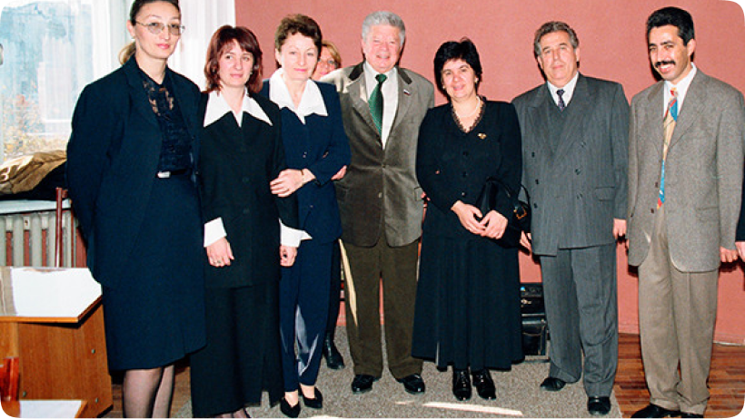

|
|
Новинка! WaveLight ALLEGRO Topolyzer VARIO (Германия) Система офтальмологическая Allegro Topolizer Vario №ФСЗ 2010/08777 от 5 сентября 2017 г. |
|
|
Новинка! WaveLight Oculyzer II (Германия) Система офтальмологическая с принадлежностями №ФСЗ 2010/08780 от 21 июня 2015 г. |
|
|
Новинка! Авторефрактометр-тонометр TRK-2P TOPCON (Япония) Авторефрактометр-тонометр TRK-2P TOPCON №РЗН 2018/7714 |
| Проектор знаков автоматический ACP-8 | Проектор знаков автоматический ACP-8. МЗ РФ №2003/1643 действительно с 22 декабря 2013 г. по 22 декабря 2013 г. |
| Набор очковых линз TSL-AF с принадлежностями | Набор очковых линз TSL-AF с принадлежностями. ФС №2006/2581 действительно с 28 декабря 2006 г. до 28 декабря 2011 г. |
| Набор очковых линз TLS-5 с принадлежностями | Набор очковых линз TLS-5 с принадлежностями. МЗМПР №96/805 действительно с 24 октября 1996 г. до 24 октября 2006 г. |
| Автокераторефрак-р KR-8800 с принадлежностями | Автокераторефрак-р KR-8800 с принадлежностями. ФС №2004/846 действительно с 3 августа 2004 до 3 августа 2014 г. |
| Автокераторефрактометр URK-700 | Автокераторефрактометр URK-700. ФСЗ №2008/01686 с 28 декабря 2006 года до 28 декабря 2016 года |
| Авторефкератометр RC-5000 с принадлежностями | Авторефкератометр RC-5000 с принадлежностями. ФС №2006/796 С 29 мая 2006 года до 29 мая 2016 года |
| Топорефкератометр RT-7000 с принадлежностями | Топорефкератометр RT-7000 с принадлежностями. ФЗ №2008/01686 от 15 июля 2019 года |
| Топограф корнеальный мод. TMS-4 | Топограф корнеальный мод. TMS-4. МЗ РФ №2004/593 от 21 июня 2004г. до 21 июня 2014 г. |
 |
Топограф корнеальный мод. TMS-5 Топограф корнеальный мод. TMS-5. |
| Линейки скиаскопические ЛСК-1 | Линейки скиаскопические ЛСК-1. ФС №2005/1082 с 4 августа 2005 г. до 4 августа 2015 г. |
| Щелевая лампа офтальмологическая модели SL-D7 с цифровой камерой | Щелевая лампа офтальмологическая модели SL-D7 с цифровой камерой. ФС №2006/1206 действительно с 7 августа 2006 г. до 7 августа 2016 г. |
| Щелевая лампа SL-D2 | Щелевая лампа SL-D2. ФС №2006/1206 действительно с 7 августа 2006 г. до 7 августа 2016 г. |
| Щелевая лампа офтальмологическая модели SL-3F с принадлежностями | Щелевая лампа офтальмологическая модели SL-3F с принадлежностями. ФС №2006/1208 с 7 августа 2006 г. до 7 августа 2016 г. |
| Щелевая лампа ручная модели XL-1 в комплекте с принадлежностями | Щелевая лампа ручная модели XL-1 в комплекте с принадлежностями. ФС №2006/1200 с 3 августа 2006 г. до 3 августа 2016 г. |
| Трансиллюминатор длинный и короткий Finoff Curved Transilluminator с принадлежностями | Трансиллюминатор длинный и короткий Finoff Curved Transilluminator с принадлежностями. ФС №2005/29 с 13 января 2005 г. до 13 января 2015 г |
| Офтальмоскопы прямые Neitz | Офтальмоскопы прямые Neitz. ФС №2005/1022 с 29 июля 2005 г. до 29 июля 2015 г. |
| Тонометр бесконтактный компьютеризированный FT-1000 | Тонометр бесконтактный компьютеризированный FT-1000. ФСЗ №2008/01687 от 4 мая 2008 г. не ограничен |
| Анализатор гидро- и гемодинамики глаза ГлауТест-60 | Анализатор гидро- и гемодинамики глаза ГлауТест-60. ФСР №2011/12686 от 22 декабря 2011 г. не ограничен |
| Набор из двух грузиков металлических для определения внутриглазного давления по Маклакову НГм2 | Набор из двух грузиков металлических для определения внутриглазного давления по Маклакову НГм2. №29/10030303/5443-03 от 10 июля 2003 до 13 марта 2013г. |
| Бинокулярный офтальмоскоп Keeler | Бинокулярный офтальмоскоп Keeler. ФС №2005/1022 с 29 июля 2005 г. до 29 июля 2015 г. |
| Диагностические офтальмологические линзы | Диагностические офтальмологические линзы. МЗ РФ №2004/760 с 9 июля 2004 г. по 9 июля 2014 г. |
| Прибор для исследования поля зрения «Периграф» | Прибор для исследования поля зрения «Периграф». ФС №02010276|3717-06 действительно от 04 августа 2006 г. до 04 августа 2011 г. |
| Аппараты ультразвуковые диагностические для пахиметрии и аксиального сканирования в офтальмологии мод. UD-6000 | Аппараты ультразвуковые диагностические для пахиметрии и аксиального сканирования в офтальмологии мод. UD-6000. МЗ РФ №2003/1629 с 22 декабря 2003 по 22 декабря 2013 г. |
| Аппараты ультразвуковые диагностические для пахиметрии и аксиального сканирования в офтальмологии мод. AL-100 | Аппараты ультразвуковые диагностические для пахиметрии и аксиального сканирования в офтальмологии мод. AL-100. МЗ РФ №2003/1629 с 22 декабря 2003 по 22 декабря 2013 г. |
| Оптический когерентный томограф 3D ОСT-2000 | Оптический когерентный томограф 3D ОСT-2000. ФСЗ №2010/08163 от 01 ноября 2010 г. не ограничен |
 |
Оптический когерентный томограф 3D ОСT-1 Maestro. РЗН №2017/6522 от 30 ноября 2017 года |
 |
РЗН №2016/4467 от 21 июля 2016 года |
 |
Биометр оптический OA-2000 с принадлежностями. РЗН №2016/4692 от 08.09.2016 г. |
 |
Прибор офтальмологический UD-8000 ультразвуковой диагностический с принадлежностями. РЗН №2016/4731 от 16 сентября 2016 года |
| Аппарат АL4000 офтальмологический ультразвуковой диагностический для пахиметрии и аксиального сканирования с принадлежностями | Аппарат АL4000 офтальмологический ультразвуковой диагностический для пахиметрии и аксиального сканирования с принадлежностями. РЗН №2016/4215 от 03 июня 2016 года |
| Периметр настольный ПНР-2 | Периметр настольный ПНР-2. ФС №2005/1086 с 4 августа 2005 г. до 4 августа 2015 г. |
| Офтальмоскоп зеркальный ОЗ-5 | Офтальмоскоп зеркальный ОЗ-5. ФС №2005/1077 с 4 августа 2005 г. до 4 августа 2015 г. |
| Авторефрактометр педиатрический «Плюсоптикс» (PlusoptiX) модели 09 | Авторефрактометр педиатрический «Плюсоптикс» (PlusoptiX) модели 09. ФСЗ №2010/07199 от 24 марта 2017 года |


ООО Глазная клиника «ЛЕНАР» им. академика С.Н. Федорова — это оборудованные по мировым стандартам медицинские учреждения, оказывающие полный объем офтальмологических услуг.
Основываясь на традициях академика С.Н. Федорова, мы предлагаем эффективные и доступные медицинские услуги по диагностике и лечению глазных заболеваний. В своей работе мы применяем новейшие мировые технологии, соответствующие медицинским стандартам. Мы помогаем всем категориям населения улучшить качество их жизни, восстановить утраченную трудоспособность, обрести уверенность в себе и гармонию с окружающим миром.
 Подпись к изображению
{kind=link}
Основываясь на традициях академика С.Н. Федорова, мы предлагаем эффективные и доступные медицинские услуги по диагностике и лечению глазных заболеваний. В своей работе мы применяем новейшие мировые технологии, соответствующие медицинским стандартам. Мы помогаем всем категориям населения улучшить качество их жизни, восстановить утраченную трудоспособность, обрести уверенность в себе и гармонию с окружающим миром.
Заголовок H2
Основываясь на традициях академика С.Н. Федорова, мы предлагаем эффективные и доступные медицинские услуги по диагностике и лечению глазных заболеваний. В своей работе мы применяем новейшие мировые технологии, соответствующие медицинским стандартам. Мы помогаем всем категориям населения улучшить качество их жизни, восстановить утраченную трудоспособность, обрести уверенность в себе и гармонию с окружающим миром.
Заголовок H3
Основываясь на традициях академика С.Н. Федорова, мы предлагаем эффективные и доступные медицинские услуги по диагностике и лечению глазных заболеваний. В своей работе мы применяем новейшие мировые технологии, соответствующие медицинским стандартам. Мы помогаем всем категориям населения улучшить качество их жизни, восстановить утраченную трудоспособность, обрести уверенность в себе и гармонию с окружающим миром.
Заголовок H4
Основываясь на традициях академика С.Н. Федорова, мы предлагаем эффективные и доступные медицинские услуги по диагностике и лечению глазных заболеваний. В своей работе мы применяем новейшие мировые технологии, соответствующие медицинским стандартам. Мы помогаем всем категориям населения улучшить качество их жизни, восстановить утраченную трудоспособность, обрести уверенность в себе и гармонию с окружающим миром.